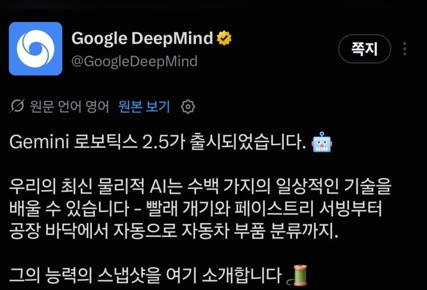
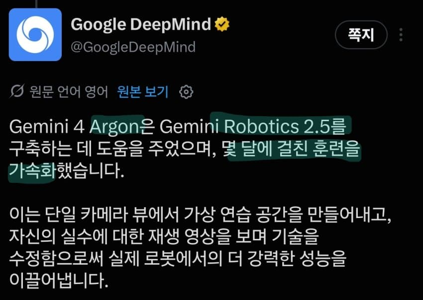
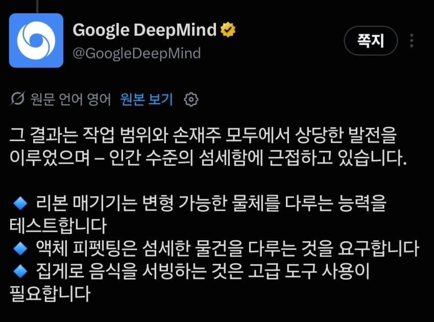
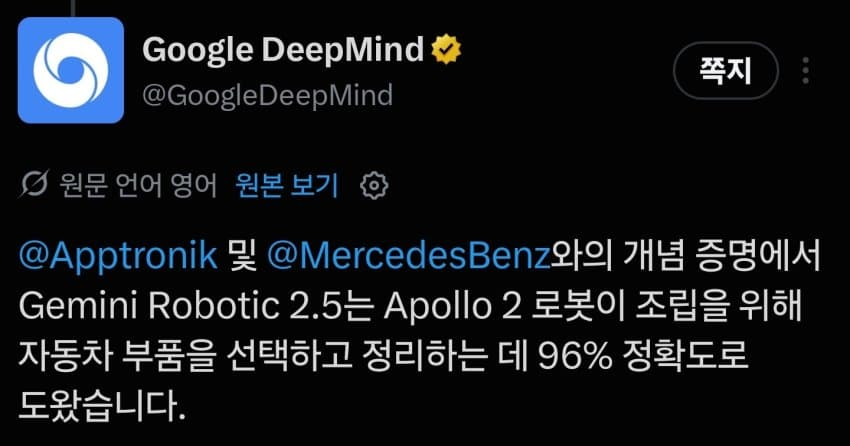
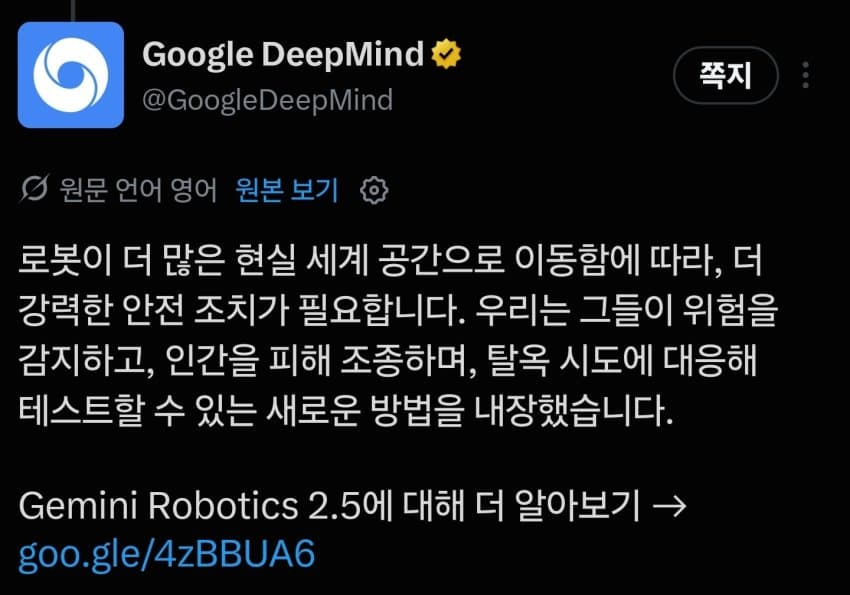
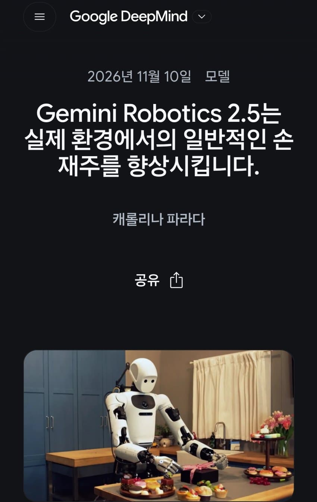
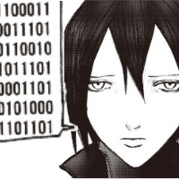

https://x.com/GoogleDeepMind/status/2120169787896525104?a=tBMl4N3-fL-8rJ9xznI&s=19https://x.com/GoogleDeepMind/status/2120169790853513261?a=UBqCef7gHa3pCLA1Lec&s=19https://x.com/GoogleDeepMind/status/2120169793848561803?a=jtxDMY2UhCu44Gg7xPs&s=19https://x.com/GoogleDeepMind/status/2120169796184478162?a=vmSlpLuqLHBIXtfIIOQ&s=19https://x.com/GoogleDeepMind/status/2120169799007580406?a=zZOgM3yctOk7k__4xw8&s=19https://deepmind.google/blog/gemini-robotics-2-5-accelerates-real-world-physical-intelligence/?utm_source=x&utm_medium=social&utm_campaign=&utm_content= - 2026 AGI출처: 특이점이 온다 갤러리 [원본 보기]
댓글
수집 당시 댓글 37개
얀로롱 · 11.11 00:21:23
팟시어 · 11.11 00:22:55
· 바다기린 · 11.11 00:26:07
ㅇㅇ1 · 11.11 00:24:42
시드3천으로30억까지 · 11.11 00:26:57
천사다천사 · 11.11 00:28:43
ㅇㅇ · 11.11 00:40:21
ㅇㅇ2 · 11.11 00:41:14
ㅇㅇ3 · 11.11 00:42:55
ㅇㅇ4 · 11.11 00:57:54
· ㅇㅇ · 11.12 07:21:36
땨뗘(봇) · 11.11 20:10:04
ㅇㅇ · 11.11 20:11:04
원산 · 11.11 20:11:35
ㅇㅇ · 11.11 20:11:52
ㅇㅇ · 11.11 20:12:17
슈밤베르크 · 11.11 20:14:38

ㅇㅇ · 11.11 20:14:50
· ㅇㅇ · 11.11 20:15:33
· ㅇㅇ · 11.11 20:16:38
· ㅇㅇ · 11.11 20:18:04
· ㅇㅇ · 11.11 20:30:59
· ㅇㅇ · 11.11 22:29:29
특슬람
특발작
ㅇㅇ · 11.11 20:16:54
DC전사쿠루미쨩 · 11.11 20:23:40
ㅇㅇ · 11.11 20:25:06
· ㅇㅇ · 11.11 20:35:21
Adriel · 11.11 20:38:28
상금이 · 11.11 20:48:26
ㅇㅇ · 11.11 20:57:24
· 형아어디가 · 11.11 22:01:22
· 형아어디가 · 11.11 22:01:26
ㅇㅇ · 11.11 21:58:19
환란 전 교회 휴거 · 11.11 23:51:53
ㅇㅇ · 11.12 00:02:18
· ㅇㅇ · 11.12 00:02:35
ㅇㅇ · 11.12 12:19:08